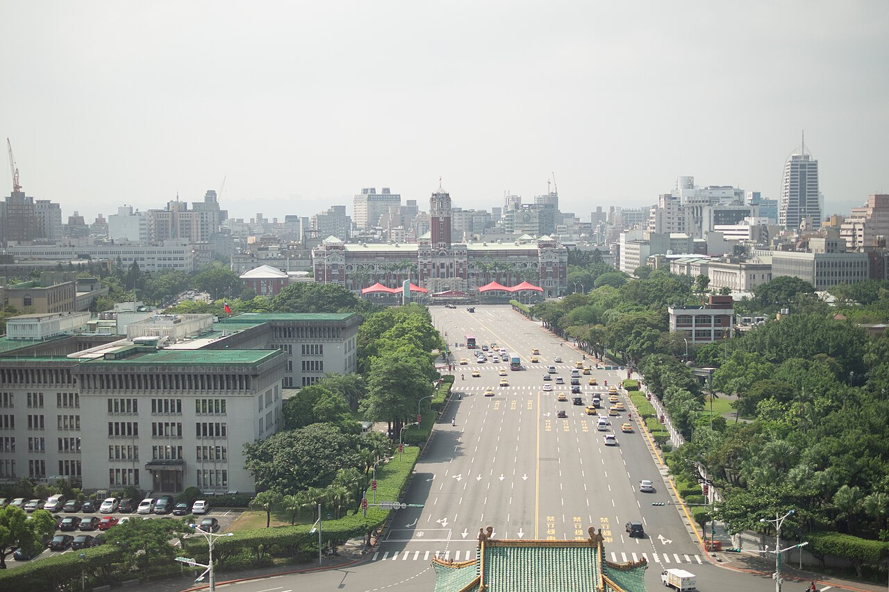
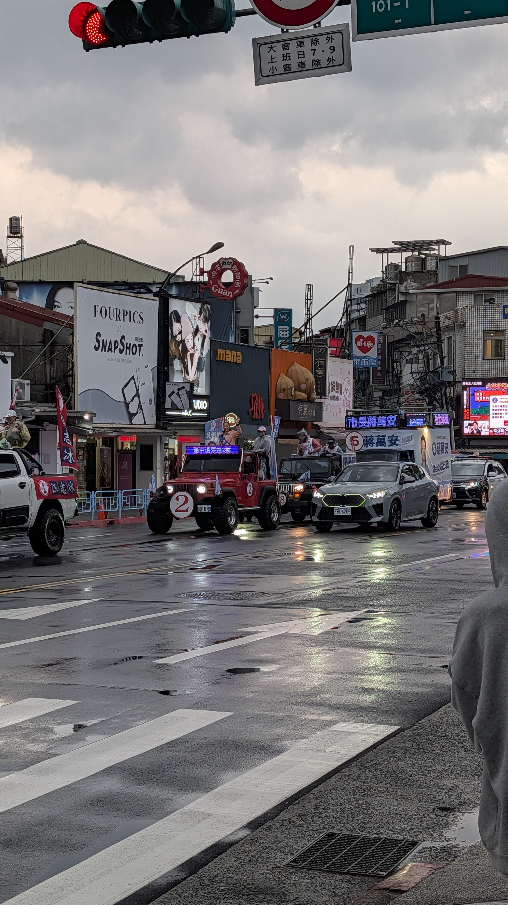
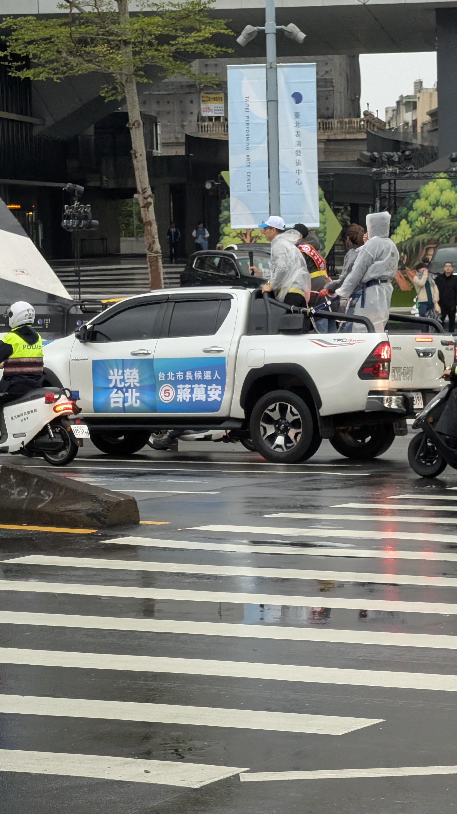
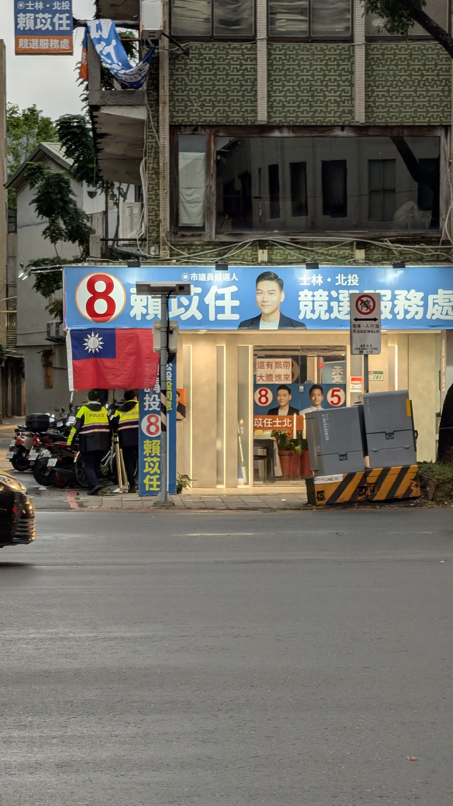

-
118:306:30 PM
集合出發Meet-up
捷運台大醫院站2號出口，確認服裝與夥伴 NTU Hospital Stn, Exit 2 — check in with your group
更多資訊More info
2號出口在台大醫院舊館大門旁，備有電梯與手扶梯。請避免穿著純藍或純綠整套服裝。 Exit 2 sits right by the old NTU Hospital main gate, with an elevator and escalators. Please skip an all-blue or all-green outfit.
-
219:00–20:107:00–8:10 PM 現在NOW
凱達格蘭大道Ketagalan Boulevard
第一場陣營的勝選之夜，我們停留在公園路口外圍安全區 The first campaign's election-night rally — we'll stay at the Park Rd. end, outside the inner crowd

介壽路到凱達格蘭大道 From Jieshou Road to Ketagalan Boulevard
Photo: othree / Wikimedia Commons, CC BY 2.0
💭 想一想：當選舉像搖滾演唱會一樣熱血沸騰，這股熱情是讓民主更有生命力，還是蓋過了理性辯論？ 💭 Think about it: when an election feels like a rock concert, does that passion make democracy more alive — or drown out reasoned debate?延伸思考Go deeper
流著對的血，就該讓你統治所有人嗎？中國幾千年的「家天下」把天下當私產傳給兒子；但傳說中的堯反而跳過親生兒子，把天下禪讓給毫無血緣的舜。這條大道正對著的總統府，就是從「家天下」走向「一人一票」最具體的現場。 Does the right bloodline earn you the right to rule everyone? For millennia, China's dynasties passed power to sons by blood — yet the legendary sage-king Yao famously skipped his own son and ceded the throne to Shun, an unrelated commoner proven virtuous. The Presidential Office this boulevard faces is the physical site of that shift from "rule by blood" to "one person, one vote." 堯舜禪讓／孟子 · Locke vs. Divine Right of Kings更多資訊More info
這條400公尺的大道，戒嚴時期名叫「介壽路」，連騎腳踏車都要下車牽行，1996年才改成今天的名字。今晚換成萬人揮旗的「大進場」。 This 400-meter boulevard was once "Jieshou Road" under martial law — even cyclists had to dismount and walk it. It got its current name in 1996. Tonight it fills with flag-waving crowds for the candidate's grand entrance.
-
320:10–20:458:10–8:45 PM 現在NOW
轉場On the Move
步行8分鐘到台北車站，搭板南線到國父紀念館站 An 8-min walk to Taipei Main Station, then the Bannan Line to NSYS Memorial Hall Stn
💭 想一想：台灣沒有通訊投票，你得親自回到戶籍地投票。這究竟是一道門檻，還是一種儀式感？ 💭 Think about it: Taiwan has no mail-in voting — you must travel home in person to vote. Is that a barrier, or a ritual?延伸思考Go deeper
眼前這些年輕人，正是要跟今晚的選舉結果共存最久的人——但「世代正義」的難題是：國債、氣候政策、長期建設的後果由下一代承擔最久，可選舉只讓「現在剛好到投票年齡」的人決定，還沒出生、或太年輕的人完全沒有投票權。 The young people around you are exactly the ones who'll live longest with tonight's outcome — yet "intergenerational justice" asks: today's debt, climate policy, and long-term decisions are inherited by the next generation, but elections only give a say to those who happen to be old enough right now. 世代正義 · Intergenerational Justice更多資訊More info
留意車廂裡提著行李、專程返鄉投票的年輕人——投票率常年維持在七成上下，靠的正是這份「非回去不可」的堅持。 Watch for young passengers with luggage, traveling home just to vote — turnout has long held around 70%, powered by exactly this kind of commitment.
-
420:45–22:008:45–10:00 PM 現在NOW
國父紀念館Sun Yat-sen Memorial Hall
第二場陣營的市民之夜，直擊大進場高潮與準時散場 The second campaign's rally — the grand entrance, then a dead-on-time wrap

灰姑娘的十點鐘 The Cinderella Hour
Photo: 許寧 / VOA, Wikimedia Commons, Public Domain
💭 想一想：當雙方都把這場選舉當作生死之戰，是什麼讓晚上10點的煞車踩得這麼準？ 💭 Think about it: when both sides treat this election as existential, what makes everyone brake exactly at 10 PM?延伸思考Go deeper
今晚的演講裡，兩邊都會搬出數字證明自己做得好——施政滿意度、經濟成長率。但「古德哈特定律」提醒我們：一旦數字變成目標，它就不再是個好指標（越戰時美軍靠「敵軍死亡人數」衡量戰果，結果下級軍官一路謊報）。選民到底是在評斷真實治理，還是在評斷一套被設計過的數字？ Tonight's speeches will both cite numbers as proof of good governance — approval ratings, growth rates. But Goodhart's Law warns: once a measure becomes a target, it stops being a good measure (the Vietnam War's "body count" metric famously got gamed up the chain of command). Are voters judging real governance, or a curated set of numbers? Goodhart's Law · McNamara Fallacy明天開票所監票的是一般路人，不是政治學專家。如果大部分選民根本不懂經濟、外交政策，他們的一票憑什麼跟每天研究這些議題的專家一樣重？但反過來：靠不懂政策的普通人盯著票匭，而不是靠「專家說了算」，會不會才是這套制度真正可靠的原因？ Tomorrow's vote count is watched by ordinary passersby, not political scientists. If most voters barely understand economics or diplomacy, why should their vote count as much as an expert's? Or is it precisely because ordinary people — not "the experts" — are the ones watching the ballot box that makes the system trustworthy? Jason Brennan, Against Democracy更多資訊More info
9點55分還像搖滾演唱會般沸騰，10點整麥克風準時關閉——這是《選罷法》規定的冷靜期。明天開票所，你會看到答案的另一半：人工大聲唱票。 At 9:55 it's as loud as a rock concert; at 10:00 sharp, the mics cut — a legally mandated cooling-off period. Tomorrow at the vote count, you'll see the other half of the answer: ballots counted out loud, by hand.
-
522:05–22:4510:05–10:45 PM 現在NOW
宵夜時光Late-Night Supper
延吉街／光復南路240巷，邊吃邊聊，避開散場人龍 Yanji St. / Guangfu S. Rd. Lane 240 — food, talk, and no MRT crowd
💭 想一想：51%的人，可以合法地碾壓49%的人嗎？當多數民意與少數人權相衝突時，民主該怎麼抓平衡？ 💭 Think about it: can 51% legally run over 49%? When the majority's will clashes with a minority's rights, how should a democracy strike the balance? 托克維爾，「多數暴政」 · Tocqueville, "Tyranny of the Majority"更多資訊More info
政治立場不合會拆散家庭？在台灣的離婚原因排行榜上，它甚至擠不進前十名。一家人藍綠白分投，照樣一起吃牛肉麵。 Does political disagreement break up families? It doesn't even crack Taiwan's top-ten divorce causes. Families vote every which way — then go get beef noodles together.
-
622:45 起10:45 PM onward 現在NOW
賦歸Heading Back
國父紀念館站2號出口，離宵夜地點最近的捷運出口 NSYS Memorial Hall Stn Exit 2 — the closest MRT exit to where you ate
更多資訊More info
緊鄰光復南路260巷，距今晚的宵夜地點僅數十公尺。 Right by Guangfu S. Rd. Lane 260, just steps from tonight's supper spot.
街頭選戰實況Street Campaign Scenes
選戰最後幾天街頭常見的畫面，不是特定某一晚的行程紀錄。 Everyday scenes from the campaign's final days — not tied to any single night's itinerary.
文宣車經過Campaign Truck Passing By

十字路口車隊Convoy at the Crossroads

向市民揮手Waving to the Crowd

競選服務處Campaign Field Office
行程照片Tour Photos
行程結束後，這裡會放上現場照片與完整說明——先賣個關子。 Photos and the full story will appear here after the tour. Stay curious.